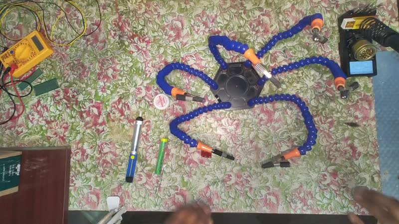
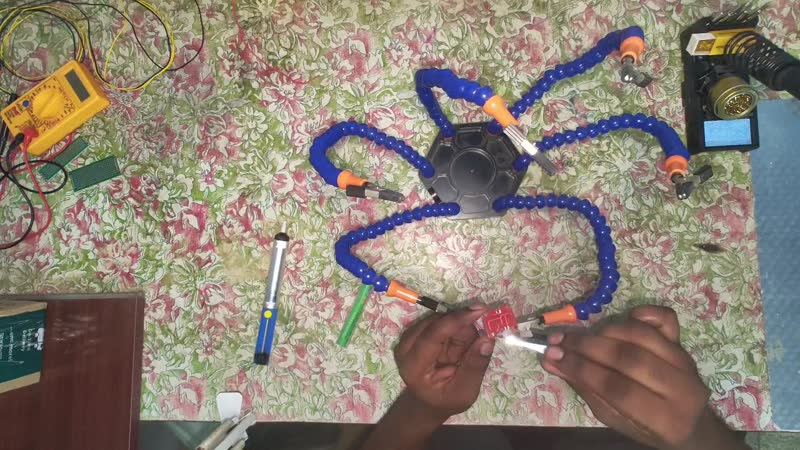
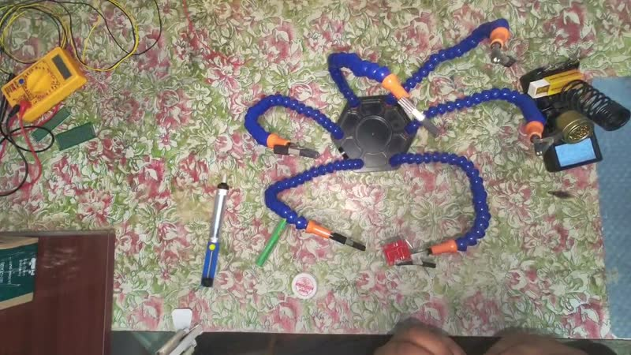
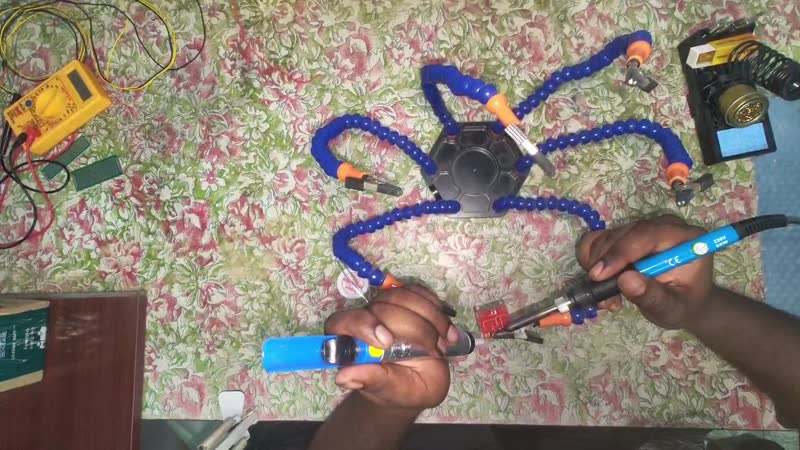
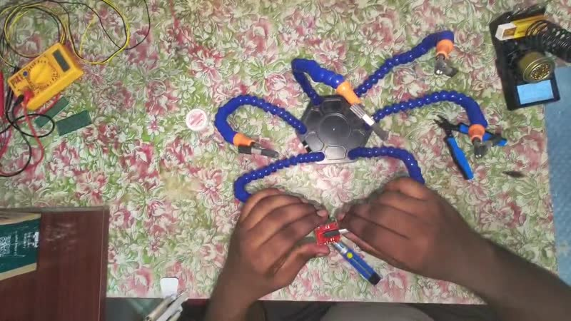
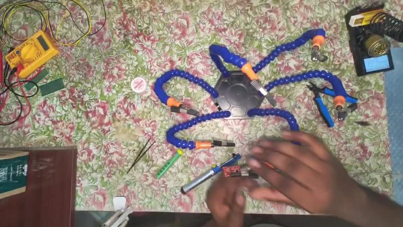

The Procedural Memory Graph compiles expert demonstrations into explicit procedural memories that capture how the world evolves during a task, making expert knowledge reusable for future execution.
We compress experience into meaningful milestones, keep the decisions that matter, and discard incidental movement. PMG gives machines the same structure: an explicit hierarchy, learned from demonstrations, that any reasoning system can read, edit, and execute.
Only procedurally meaningful information enters the graph — if forgetting it wouldn't prevent someone from reproducing the task, it is discarded.
Nodes are world states, not controller states or trajectories. Actions transform states; observable conditions verify progress; exit criteria decide transitions — including loops for retries and recovery.
One real 10-minute demonstration — desoldering a header, including a genuine failure and strategy switch — compiled into procedural memory.






This is not a visualization of the demonstration — it is the procedural memory constructed from it. Click a milestone to expand its states, a state to open its compartments, an action to unfold its parameters.
Second worked example (physics-driven states, steeping loop): Make Tea →
Every runtime decision is grounded in the Procedural Memory Graph. A Procedural Reasoning Engine consumes it at runtime — localizing the current world state in the graph, deciding the next step, requesting perception verification, and guiding whichever executor is present. Today it may be implemented with an LLM; tomorrow, a specialized model. The architecture doesn't care.
The procedural memory never stores embodiment-specific trajectories. The memory stays unchanged — only the executor changes.
PMG doesn't compete with behavior trees, imitation learning, or foundation models — they were designed for different roles. PMG is the procedural-memory layer that sits beneath and alongside them.
| Approach | Strength | Limitation |
|---|---|---|
| Hardcoded workflows | Deterministic and reliable | Hand-authored; hard to learn from demonstrations or evolve |
| Trajectory / imitation learning | Captures expert motion | Hard to inspect, edit, merge, or explain |
| Language / generic LLMs | Flexible, broad reasoning | Procedural knowledge stays implicit in weights — non-persistent, hard to verify |
| Procedural Memory Graph | Explicit, editable, persistent procedural memory | Purpose-built for learning, storing, and executing procedures |
The design philosophy: separate procedural knowledge from the reasoning system. The graph stores the procedure; reasoning systems consume it rather than implicitly memorizing it.
Current research focuses on the representation itself — the procedural hierarchy, the State schema, Action Groups, object representation, observable conditions, and execution semantics. Perception, compiler algorithms, and reasoning engines are layers built on top.